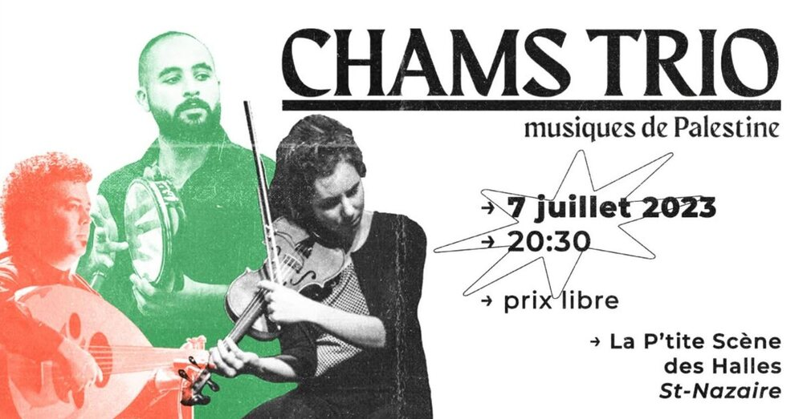

CHAMS trio : musiques de Palestine

Lieu : La P'tite Scène des Halles, Saint-Nazaire
CHAMS est un trio franco-palestinien en tournée dans l'ouest de la France : oud, percussions et violon, chansons populaires du Moyen-Orient, morceaux instrumentaux et compositions originales. Prix libre (conseillé 10 €).
Événement organisé par Dona Iemanjà.